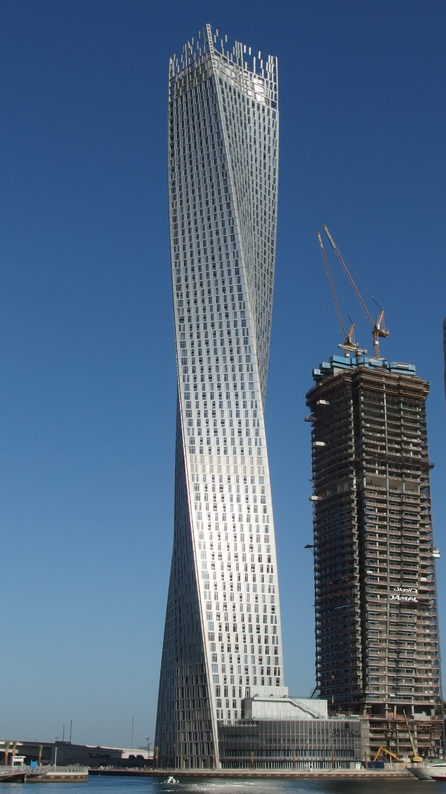

About the Project
I am currently working on hosting the line of 3D model NFTs I built for my Dad on this website. He is an architect who specializes in designing large buildings. For every building he designs, he creates a physical model and a 2D representation. As a present to him, I decided to replicate his work in another medium using Blender's 3D modeling software.
These digital 3D models capture the essence of his architectural designs and provide a unique, modern way to showcase his creative vision. The goal is to make these models available as NFTs, combining art, architecture, and technology into a new collectible format.
If you're interested in the technical details of this project or want to explore the code, please check it out here: